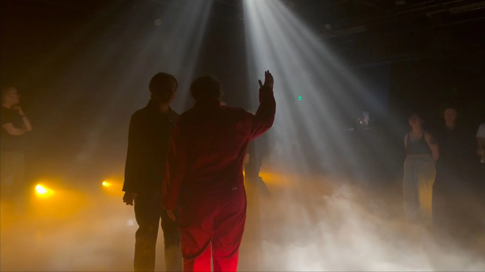
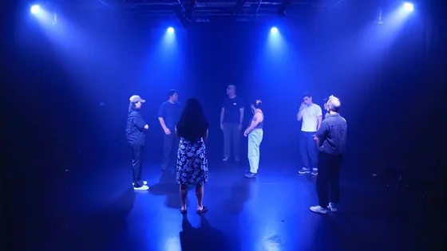
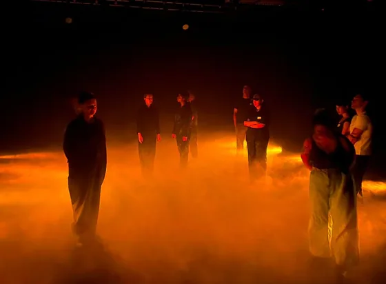
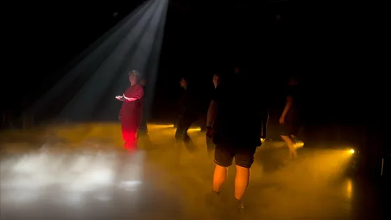

Dusk Demonstration Zone
Immersive Performance · 2026

Keep silent. If the light grows stronger, step back.
Dusk Demonstration Zone is an immersive performance exploring the relationship between light, fear, authority and human behaviour. Drawing inspiration from rule-based horror and the uncanny, the work constructs a fictional environment governed by a system of seemingly arbitrary instructions, where audiences navigate an uncertain territory through light, sound and collective behaviour.
Rather than functioning solely as a visual or atmospheric element, light operates as an invisible architecture of power. Shifting boundaries of illumination and darkness redefine the relationship between safety and danger, visibility and vulnerability, obedience and resistance. Through repetition, anticipation and subtle disruptions, the performance explores how external regulations gradually become internalised as instinctive behaviours.
The work questions not only how an environment can shape human perception, but also how individuals participate in the construction and preservation of the systems that govern them. When uncertainty becomes habitual, where does the boundary between voluntary action and conditioned obedience lie?
- Role
- Concept & Direction, Lighting Design, Sound Design, Technical Realisation
- Medium
- Light, Sound, Live Performance, Audience Participation
- Location
- Rose Bruford College, London
- Year
- 2026
A room governed by light
You enter under cold blue light. It fades to a low layer of amber and the room settles into dusk. A voice calls its rules the Civic Protocol. The Black Operators make their rounds until following those rules starts to feel routine.
There are no barriers between you and the bright areas. You can see where the boundary is and decide for yourself whether to cross it.




Then someone steps forward
The Red Operator steps into the brightest part of the room and speaks. I left this moment untimed. She chose when to address the room, and from the desk I took her call-out as my cue to start the next sequence of light and sound.
Afterwards, some spectators said the brighter light made them curious. Seeing Red removed made some more willing to challenge the rules. I’d expected them to pull back.

Behind the light
I wrote and directed the piece and designed its lighting. I also programmed the cues, fitted up the lighting and sound, and ran the show from the desk.
Lighting and cues
LED Fresnels set the cold opening. I shuttered Source Four Juniors to keep the amber close to the floor and used focused Source Fours to mark the areas the audience was asked to avoid.
The room looked almost dark from the desk. I tested what the audience could see from inside the space and adjusted the levels again when low fog made the beams more visible.
Most of the lighting cues followed a pre-composed QLab audio sequence. I ran the next light and sound sequence on Red’s live call-out.
Credits
MFA final project, Rose Bruford College, 2026- Concept, writing, direction, lighting design, sound design and technical realisation
- Yun Deng
- Performers
- Alina Aleya, Hanna Harnyk, Danae Odeogberin, Luminescence Thring